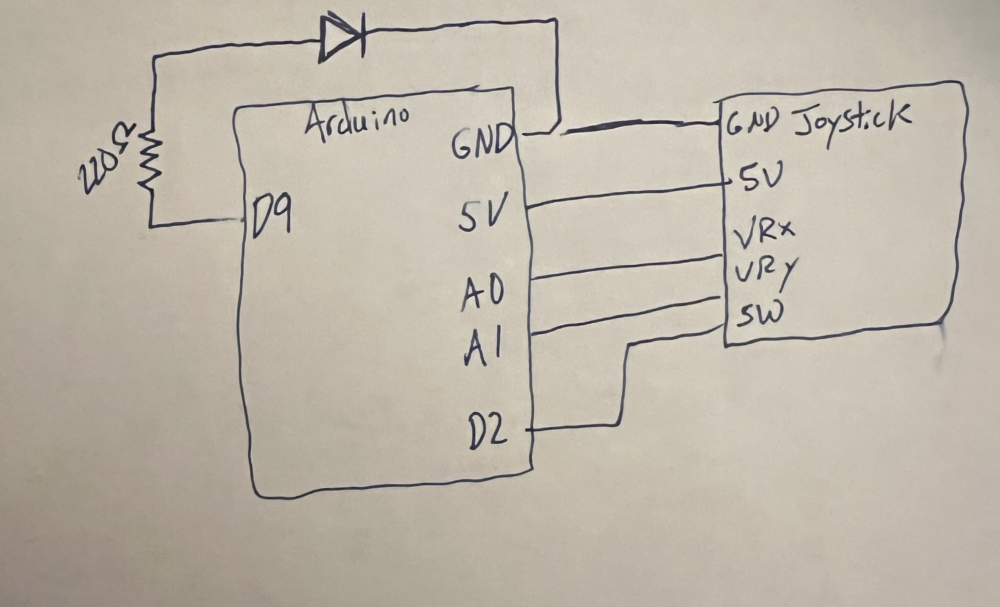
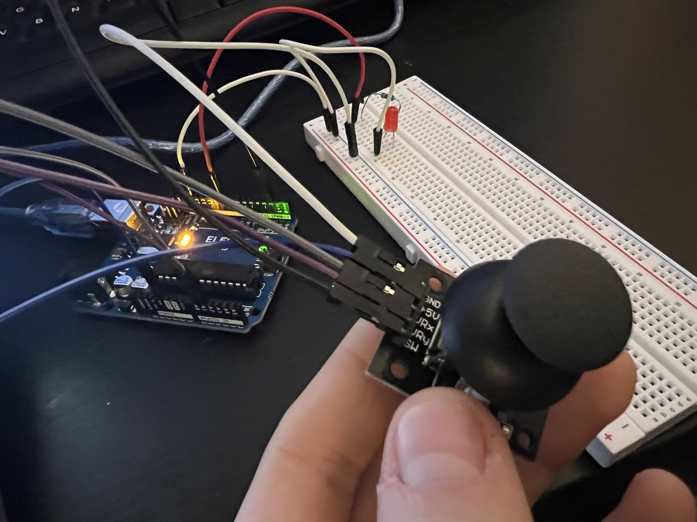
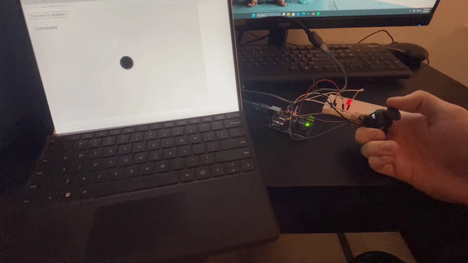
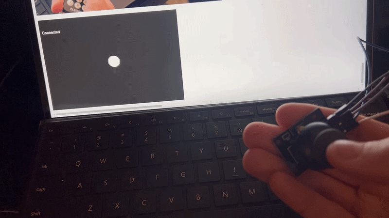
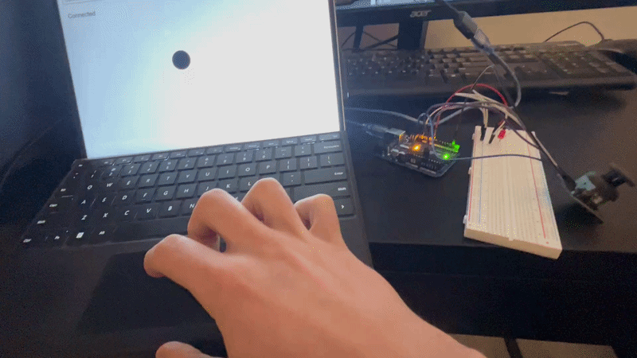

// Use the built-in serial port over USB
// (WebSerial reads/writes this Serial connection)
// Store the joystick X analog pin
const int joyXPin = A0;
// Store the joystick Y analog pin
const int joyYPin = A1;
// Store the joystick button pin (digital)
const int joyBtnPin = 2;
// Store the PWM LED output pin
const int ledPin = 9;
// Store the raw joystick readings
int joyX = 0;
int joyY = 0;
// Store the joystick button state
int joyBtn = 0;
// Store the current LED brightness (0–255)
int ledBrightness = 0;
// Store whether the LED is enabled
bool ledEnabled = true;
void setup() {
// Start serial communication at 9600 baud
Serial.begin(9600);
// Set joystick button pin as input with internal pullup (stable reading)
pinMode(joyBtnPin, INPUT_PULLUP);
// Set LED pin as output so Arduino drives it (not floating)
pinMode(ledPin, OUTPUT);
// Start with LED off (safe default)
analogWrite(ledPin, 0);
}
void loop() {
// Read joystick X (0–1023)
joyX = analogRead(joyXPin);
// Read joystick Y (0–1023)
joyY = analogRead(joyYPin);
// Read button (pressed = LOW because of INPUT_PULLUP)
joyBtn = digitalRead(joyBtnPin);
// Print X value
Serial.print(joyX);
// Print comma separator
Serial.print(",");
// Print Y value
Serial.print(joyY);
// Print comma separator
Serial.print(",");
// Print button as 1 when pressed, 0 when not pressed
Serial.println(joyBtn == LOW ? 1 : 0);
// If serial data is available from the webpage, read it
if (Serial.available() > 0) {
// Read a full command line up to newline
String cmd = Serial.readStringUntil('\n');
// Remove extra whitespace
cmd.trim();
// If command starts with "B," it sets brightness
if (cmd.startsWith("B,")) {
// Extract substring after "B,"
String valStr = cmd.substring(2);
// Convert to integer
int val = valStr.toInt();
// Clamp to 0–255
val = constrain(val, 0, 255);
// Store brightness
ledBrightness = val;
}
// If command is "T" toggle LED enable
else if (cmd == "T") {
// Flip LED enabled state
ledEnabled = !ledEnabled;
}
}
// If LED is enabled, output brightness; otherwise force off
analogWrite(ledPin, ledEnabled ? ledBrightness : 0);
// Small delay so serial is readable and stable
delay(20);
}
Sketch.js code:
// Store the serial port object
let port;
// Store the reader object
let reader;
// Store the writer object
let writer;
// Store latest joystick values from Arduino
let joyX = 512;
let joyY = 512;
let joyBtn = 0;
// Store background toggle state controlled by joystick button
let bgOn = false;
// Store whether we are connected
let connected = false;
// p5 setup runs once
function setup() {
// Create a canvas for our interactive visualization
createCanvas(600, 400);
// Set text size for UI messages
textSize(16);
// Create a connect button
const btn = createButton("Connect to Arduino");
// Position the button
btn.position(10, 10);
// When button clicked, connect via WebSerial
btn.mousePressed(connectSerial);
}
// p5 draw runs repeatedly
function draw() {
// Draw background based on joystick button toggle
background(bgOn ? 30 : 240);
// Map joystick X from 0–1023 to canvas width
const x = map(joyX, 0, 1023, 0, width);
// Map joystick Y from 0–1023 to canvas height
const y = map(joyY, 0, 1023, 0, height);
// Draw a circle controlled by the joystick position
ellipse(x, y, 50, 50);
// Display connection status
fill(bgOn ? 255 : 0);
text(connected ? "Connected" : "Not connected", 10, 60);
// If connected, send LED brightness based on mouseX
if (connected) {
// Map mouseX to PWM brightness 0–255
const brightness = int(map(constrain(mouseX, 0, width), 0, width, 0, 255));
// Send brightness command to Arduino
sendLine(`B,${brightness}`);
}
}
// Connect to WebSerial and start reading
async function connectSerial() {
// Request the user to pick a serial port
port = await navigator.serial.requestPort();
// Open the port at the same baud rate as Arduino
await port.open({ baudRate: 9600 });
// Create a text decoder for incoming bytes
const decoder = new TextDecoderStream();
// Pipe the port's readable stream into the decoder
port.readable.pipeTo(decoder.writable);
// Get a readable stream of decoded text
const inputStream = decoder.readable;
// Create a reader to read lines
reader = inputStream.getReader();
// Create a text encoder for outgoing text
const encoder = new TextEncoderStream();
// Pipe the encoder into the port's writable stream
encoder.readable.pipeTo(port.writable);
// Get a writer we can write strings to
writer = encoder.writable.getWriter();
// Mark connection state
connected = true;
// Start the read loop
readLoop();
}
// Continuously read serial data and parse CSV
async function readLoop() {
// Store a buffer for partial lines
let buffer = "";
// Keep reading forever
while (true) {
// Read a chunk from the serial stream
const { value, done } = await reader.read();
// If the stream ended, stop
if (done) break;
// Add chunk to buffer
buffer += value;
// Split buffer into lines
const lines = buffer.split("\n");
// Keep last partial line in buffer
buffer = lines.pop();
// Process each complete line
for (const line of lines) {
// Trim whitespace
const trimmed = line.trim();
// Skip empty lines
if (!trimmed) continue;
// Parse x,y,btn
const parts = trimmed.split(",");
// Only process if we got all three values
if (parts.length === 3) {
joyX = int(parts[0]);
joyY = int(parts[1]);
// Convert button to 0/1
const newBtn = int(parts[2]);
// If button just became pressed, toggle background
if (newBtn === 1 && joyBtn === 0) {
bgOn = !bgOn;
}
// Store last button state
joyBtn = newBtn;
}
}
}
}
// Send a newline-terminated command to Arduino
async function sendLine(msg) {
// If we do not have a writer, do nothing
if (!writer) return;
// Write the message followed by newline
await writer.write(msg + "\n");
}
// When a key is pressed, send commands to Arduino
function keyPressed() {
// If not connected, ignore
if (!connected) return;
// If spacebar pressed, toggle LED on Arduino
if (key === " ") {
sendLine("T");
}
}
Schematic & Circuit:




